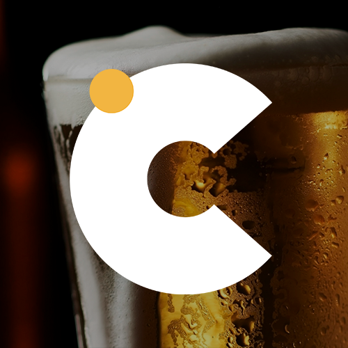
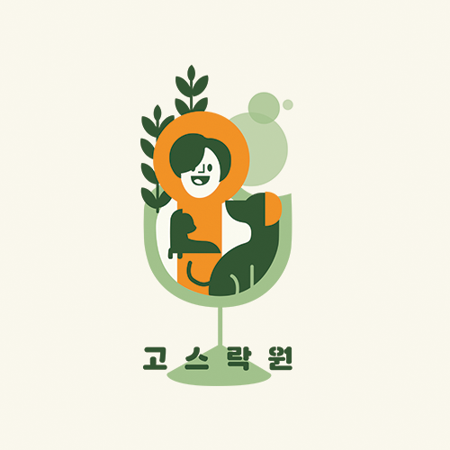

Web Design Studio Czecmac
첵맥은 한마디로 체코여행에서 맥주를 색다르게 즐기는 방법을 제시하는 웹사이트이다.
여러 맥주 관련 콘텐츠를 필요한 체력 및 술의 주량 정도로 난이도를 분류하여
사용자가 자신에게 맞는 적절한 콘텐츠를 즐길 수 있도록 돕는다.
또한, 리뷰와 커뮤니케이션 공간을 만들어 사용자들의 소통으로 꾸준한 사용을 유도하였다.

Interactive Media
어비슬립
어비슬립[ABYSSLEEP]은 현대인들의
수면 건강 관리를 통한 삶의 질 향상을 목적으로
기획되었으며
물고기를 잡고 수조를 꾸미는 게임형식과
꾸준한 어플 사용시 얻을 수 있는 포인트로
기프티콘을 얻을 수 있는 보상 형식을 도입하여
사용자의 흥미를 유발하고 지속적인 수면관리를
할 수 있게 하였다.

Multimedia Design
고스락원
'고스락원'은 시니어의 신체적 문제 사회적 문제 심리적 특성 등
여러가지 문제점에 도움을 줄 수 있는 반려식물들과 술집의 결합으로
즐겁고 건강한 음주생활, 다양한 문화생활, 건강케어까지 받을 수 있는 시니어를 위한
시니어들의 새로운 음주문화 생활공간입니다.